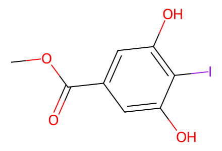
COC(=O)c1cc(O)c(I)c(O)c1Main routes and SI preparations S1-S8, including model Heck controls and oxidative side product. Racemic source structures are representative relative stereochemistry, not enantiopure assignments. Chiral separation of 6 is an analytical resolution observation; absolute assignments of separated fractions are not inferred from rotation sign. Facts compiled deterministically; independent review pending.
完整 JSON · 逐步 CSV · 路线序列 · SDF · HRMS 核对
| 事件 | 分子连接 | 报告产率 | Canonical reaction SMILES |
|---|---|---|---|
| A01 | S1 → S2 | S2: 74% | COC(=O)c1cc(O)c(I)c(O)c1>>COCOc1cc(C(=O)OC)cc(OCOC)c1I |
| A02 | S2 → S3 | S3: 91% | COCOc1cc(C(=O)OC)cc(OCOC)c1I>>COCOc1cc(C=O)cc(OCOC)c1I |
| A03 | S3 → 12 | 12: 88% | COCOc1cc(C=O)cc(OCOC)c1I>>C#Cc1cc(OCOC)c(I)c(OCOC)c1 |
| B01 | 10 → S4 | S4: 58% | COCOc1cccc(O)c1>>COCOc1ccc(I)c(O)c1 |
| B02 | S4 → 11 | 11: 99% | COCOc1ccc(I)c(O)c1>>COCOc1ccc(I)c(OC(C)=O)c1 |
| C01 | 11 + 12 → 13 | 13: 85% | C#Cc1cc(OCOC)c(I)c(OCOC)c1.COCOc1ccc(I)c(OC(C)=O)c1>>COCOc1ccc(C#Cc2cc(OCOC)c(I)c(OCOC)c2)c(OC(C)=O)c1 |
| C02 | 13 → 14 | 14: 75% | COCOc1ccc(C#Cc2cc(OCOC)c(I)c(OCOC)c2)c(OC(C)=O)c1>>COCOc1ccc2cc(-c3cc(OCOC)c(I)c(OCOC)c3)oc2c1 |
| C03 | 14 + 2-methylbut-3-en-2-ol → 9 | 9: 72% | C=CC(C)(C)O.COCOc1ccc2cc(-c3cc(OCOC)c(I)c(OCOC)c3)oc2c1>>C=C(C)/C=C/c1c(OCOC)cc(-c2cc3ccc(OCOC)cc3o2)cc1OCOC |
| M01 | S5 + 2-methylbut-3-en-2-ol → S6 | S6: 43% | C=CC(C)(C)O.COc1ccc2cc(-c3cc(OC)c(I)c(OC)c3)oc2c1>>C=C(C)/C=C/c1c(OC)cc(-c2cc3ccc(OC)cc3o2)cc1OC |
| M02 | S5 + 2-methylbut-3-en-2-ol → S6 | S6: 23% | C=CC(C)(C)O.COc1ccc2cc(-c3cc(OC)c(I)c(OC)c3)oc2c1>>C=C(C)/C=C/c1c(OC)cc(-c2cc3ccc(OC)cc3o2)cc1OC |
| M03 | S5 + 2-methylbut-3-en-2-ol → S6 | S6: 62% | C=CC(C)(C)O.COc1ccc2cc(-c3cc(OC)c(I)c(OC)c3)oc2c1>>C=C(C)/C=C/c1c(OC)cc(-c2cc3ccc(OC)cc3o2)cc1OC |
| D01 | 15 + 16 → 8 | 8: 82% | COCOc1ccc(C(C)=O)c(O)c1.COCOc1ccc(C=O)c(O)c1>>COCOc1ccc(/C=C/C(=O)c2ccc(OCOC)cc2O)c(O)c1 |
| D02 | 8 → 17 | 17: 77% | COCOc1ccc(/C=C/C(=O)c2ccc(OCOC)cc2O)c(O)c1>>COCOc1ccc(C(=O)/C=C/c2ccc(OCOC)cc2OC(C)=O)c(O)c1 |
| D03 | 9 + 17 → 18 + 19 | 18: 33%; 19: 27% | C=C(C)/C=C/c1c(OCOC)cc(-c2cc3ccc(OCOC)cc3o2)cc1OCOC.COCOc1ccc(C(=O)/C=C/c2ccc(OCOC)cc2OC(C)=O)c(O)c1>>COCOc1ccc(C(=O)[C@@H]2[C@@H](c3ccc(OCOC)cc3OC(C)=O)CC(C)=C[C@H]2c2c(OCOC)cc(-c3cc4ccc(OCOC)cc4o3)cc2OCOC)c(O)c1.COCOc1ccc(C(=O)[C@H]2[C@@H](c3c(OCOC)cc(-c4cc5ccc(OCOC)cc5o4)cc3OCOC)C=C(C)C[C@@H]2c2ccc(OCOC)cc2OC(C)=O)c(O)c1 |
| E01 | 18 → 4 + 5 | 4: 47% | COCOc1ccc(C(=O)[C@H]2[C@@H](c3c(OCOC)cc(-c4cc5ccc(OCOC)cc5o4)cc3OCOC)C=C(C)C[C@@H]2c2ccc(OCOC)cc2OC(C)=O)c(O)c1>>CC12C[C@H](c3ccc(O)cc3O)[C@@H](C(=O)c3ccc(O)cc3O)[C@H](C1)c1c(O)cc(-c3cc4ccc(O)cc4o3)cc1O2.CC1=C[C@@H]2c3c(O)cc(-c4cc5ccc(O)cc5o4)cc3O[C@]3(c4ccc(O)cc4O)Oc4cc(O)ccc4[C@@H](C1)[C@H]23 |
| E02 | 18 → 4 + 5 | 4: 17%; 5: 29% | COCOc1ccc(C(=O)[C@H]2[C@@H](c3c(OCOC)cc(-c4cc5ccc(OCOC)cc5o4)cc3OCOC)C=C(C)C[C@@H]2c2ccc(OCOC)cc2OC(C)=O)c(O)c1>>CC12C[C@H](c3ccc(O)cc3O)[C@@H](C(=O)c3ccc(O)cc3O)[C@H](C1)c1c(O)cc(-c3cc4ccc(O)cc4o3)cc1O2.CC1=C[C@@H]2c3c(O)cc(-c4cc5ccc(O)cc5o4)cc3O[C@]3(c4ccc(O)cc4O)Oc4cc(O)ccc4[C@@H](C1)[C@H]23 |
| E03 | 19 → 20 | 20: 16% | COCOc1ccc(C(=O)[C@@H]2[C@@H](c3ccc(OCOC)cc3OC(C)=O)CC(C)=C[C@H]2c2c(OCOC)cc(-c3cc4ccc(OCOC)cc4o3)cc2OCOC)c(O)c1>>CC1=C[C@@H](c2c(O)cc(-c3cc4ccc(O)cc4o3)cc2O)[C@H](C(=O)c2ccc(O)cc2O)[C@@H](c2ccc(O)cc2O)C1 |
| F01 | 18 → 7 | 7: 94% | COCOc1ccc(C(=O)[C@H]2[C@@H](c3c(OCOC)cc(-c4cc5ccc(OCOC)cc5o4)cc3OCOC)C=C(C)C[C@@H]2c2ccc(OCOC)cc2OC(C)=O)c(O)c1>>COCOc1ccc(C(=O)[C@H]2[C@@H](c3c(OCOC)cc(-c4cc5ccc(OCOC)cc5o4)cc3OCOC)C=C(C)C[C@@H]2c2ccc(OCOC)cc2O)c(O)c1 |
| F02 | 19 → S7 | S7: 90% | COCOc1ccc(C(=O)[C@@H]2[C@@H](c3ccc(OCOC)cc3OC(C)=O)CC(C)=C[C@H]2c2c(OCOC)cc(-c3cc4ccc(OCOC)cc4o3)cc2OCOC)c(O)c1>>COCOc1ccc(C(=O)[C@@H]2[C@@H](c3ccc(OCOC)cc3O)CC(C)=C[C@H]2c2c(OCOC)cc(-c3cc4ccc(OCOC)cc4o3)cc2OCOC)c(O)c1 |
| F03 | 7 → 21 | 21: 23% | COCOc1ccc(C(=O)[C@H]2[C@@H](c3c(OCOC)cc(-c4cc5ccc(OCOC)cc5o4)cc3OCOC)C=C(C)C[C@@H]2c2ccc(OCOC)cc2O)c(O)c1>>COCOc1ccc(C(=O)C2C(c3c(OCOC)cc(-c4cc5ccc(OCOC)cc5o4)cc3OCOC)=CC3(C)C[C@H]2c2ccc(OCOC)cc2O3)c(O)c1 |
| F04 | 7 → 21 + S8 | 21: 22%; S8: 20% | COCOc1ccc(C(=O)[C@H]2[C@@H](c3c(OCOC)cc(-c4cc5ccc(OCOC)cc5o4)cc3OCOC)C=C(C)C[C@@H]2c2ccc(OCOC)cc2O)c(O)c1>>COCOc1ccc(C(=O)C2C(c3c(OCOC)cc(-c4cc5ccc(OCOC)cc5o4)cc3OCOC)=CC3(C)C[C@H]2c2ccc(OCOC)cc2O3)c(O)c1.COCOc1ccc(C(=O)c2cc(C)ccc2-c2c(OCOC)cc(-c3cc4ccc(OCOC)cc4o3)cc2OCOC)c(O)c1 |
| F05 | 7 → 21 | 21: 49% | COCOc1ccc(C(=O)[C@H]2[C@@H](c3c(OCOC)cc(-c4cc5ccc(OCOC)cc5o4)cc3OCOC)C=C(C)C[C@@H]2c2ccc(OCOC)cc2O)c(O)c1>>COCOc1ccc(C(=O)C2C(c3c(OCOC)cc(-c4cc5ccc(OCOC)cc5o4)cc3OCOC)=CC3(C)C[C@H]2c2ccc(OCOC)cc2O3)c(O)c1 |
| F06 | S7 → 21 | 21: 10% | COCOc1ccc(C(=O)[C@@H]2[C@@H](c3ccc(OCOC)cc3O)CC(C)=C[C@H]2c2c(OCOC)cc(-c3cc4ccc(OCOC)cc4o3)cc2OCOC)c(O)c1>>COCOc1ccc(C(=O)C2C(c3c(OCOC)cc(-c4cc5ccc(OCOC)cc5o4)cc3OCOC)=CC3(C)C[C@H]2c2ccc(OCOC)cc2O3)c(O)c1 |
| F07 | 21 → 6 | 6: 53% | COCOc1ccc(C(=O)C2C(c3c(OCOC)cc(-c4cc5ccc(OCOC)cc5o4)cc3OCOC)=CC3(C)C[C@H]2c2ccc(OCOC)cc2O3)c(O)c1>>CC12C=C(c3c(O)cc(-c4cc5ccc(O)cc5o4)cc3O)C(C(=O)c3ccc(O)cc3O)[C@@H](C1)c1ccc(O)cc1O2 |

COC(=O)c1cc(O)c(I)c(O)c1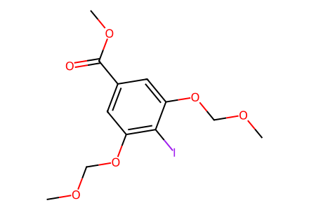
COCOc1cc(C(=O)OC)cc(OCOC)c1I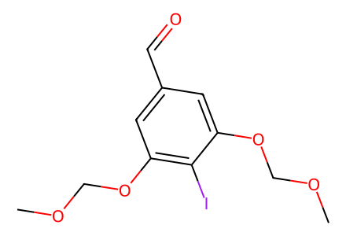
COCOc1cc(C=O)cc(OCOC)c1I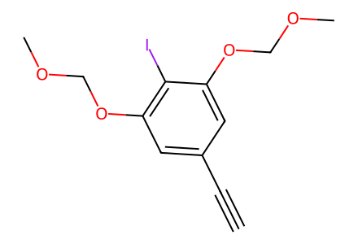
C#Cc1cc(OCOC)c(I)c(OCOC)c1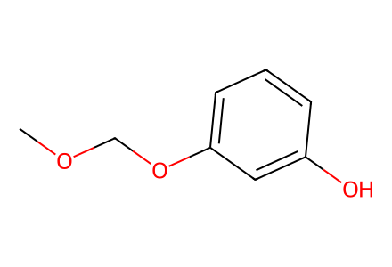
COCOc1cccc(O)c1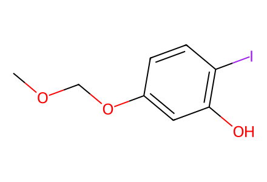
COCOc1ccc(I)c(O)c1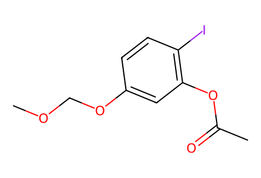
COCOc1ccc(I)c(OC(C)=O)c1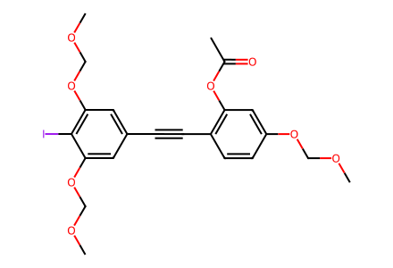
COCOc1ccc(C#Cc2cc(OCOC)c(I)c(OCOC)c2)c(OC(C)=O)c1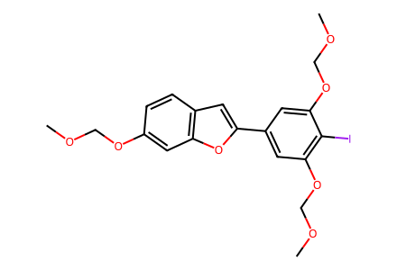
COCOc1ccc2cc(-c3cc(OCOC)c(I)c(OCOC)c3)oc2c1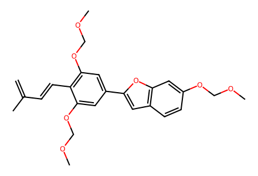
C=C(C)/C=C/c1c(OCOC)cc(-c2cc3ccc(OCOC)cc3o2)cc1OCOC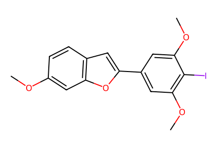
COc1ccc2cc(-c3cc(OC)c(I)c(OC)c3)oc2c1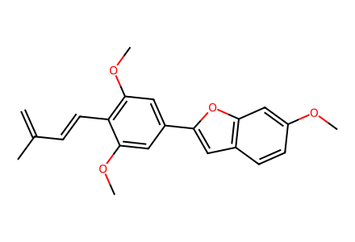
C=C(C)/C=C/c1c(OC)cc(-c2cc3ccc(OC)cc3o2)cc1OC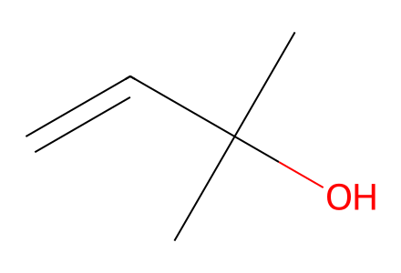
C=CC(C)(C)O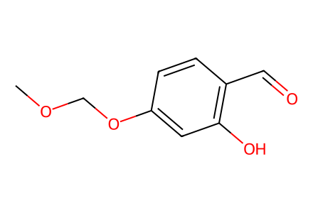
COCOc1ccc(C=O)c(O)c1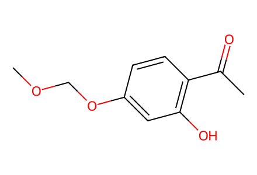
COCOc1ccc(C(C)=O)c(O)c1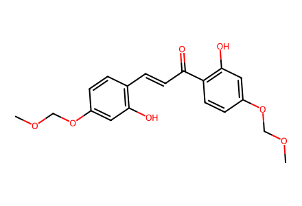
COCOc1ccc(/C=C/C(=O)c2ccc(OCOC)cc2O)c(O)c1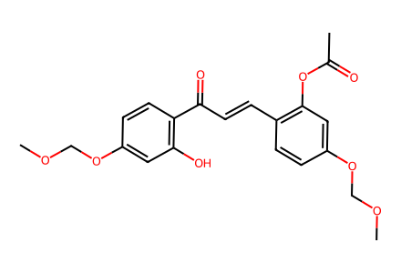
COCOc1ccc(C(=O)/C=C/c2ccc(OCOC)cc2OC(C)=O)c(O)c1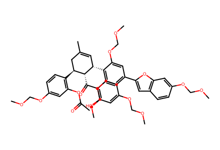
COCOc1ccc(C(=O)[C@H]2[C@@H](c3c(OCOC)cc(-c4cc5ccc(OCOC)cc5o4)cc3OCOC)C=C(C)C[C@@H]2c2ccc(OCOC)cc2OC(C)=O)c(O)c1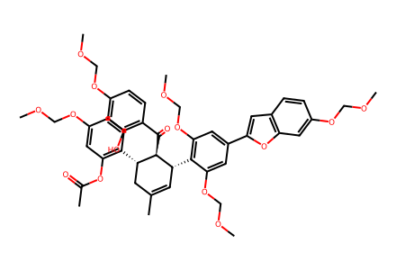
COCOc1ccc(C(=O)[C@@H]2[C@@H](c3ccc(OCOC)cc3OC(C)=O)CC(C)=C[C@H]2c2c(OCOC)cc(-c3cc4ccc(OCOC)cc4o3)cc2OCOC)c(O)c1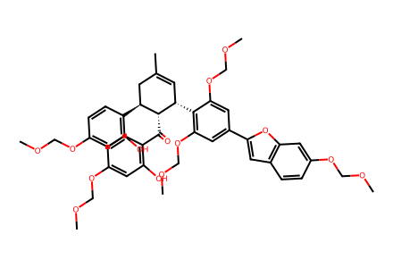
COCOc1ccc(C(=O)[C@H]2[C@@H](c3c(OCOC)cc(-c4cc5ccc(OCOC)cc5o4)cc3OCOC)C=C(C)C[C@@H]2c2ccc(OCOC)cc2O)c(O)c1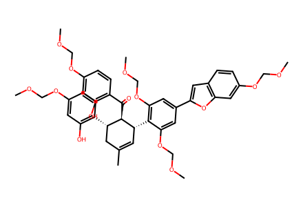
COCOc1ccc(C(=O)[C@@H]2[C@@H](c3ccc(OCOC)cc3O)CC(C)=C[C@H]2c2c(OCOC)cc(-c3cc4ccc(OCOC)cc4o3)cc2OCOC)c(O)c1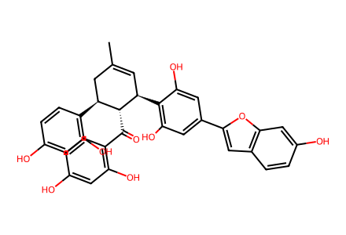
CC1=C[C@@H](c2c(O)cc(-c3cc4ccc(O)cc4o3)cc2O)[C@H](C(=O)c2ccc(O)cc2O)[C@@H](c2ccc(O)cc2O)C1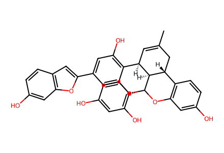
CC1=C[C@@H]2c3c(O)cc(-c4cc5ccc(O)cc5o4)cc3O[C@]3(c4ccc(O)cc4O)Oc4cc(O)ccc4[C@@H](C1)[C@H]23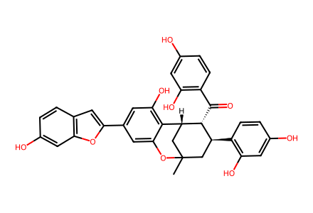
CC12C[C@H](c3ccc(O)cc3O)[C@@H](C(=O)c3ccc(O)cc3O)[C@H](C1)c1c(O)cc(-c3cc4ccc(O)cc4o3)cc1O2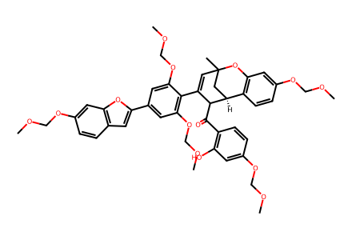
COCOc1ccc(C(=O)C2C(c3c(OCOC)cc(-c4cc5ccc(OCOC)cc5o4)cc3OCOC)=CC3(C)C[C@H]2c2ccc(OCOC)cc2O3)c(O)c1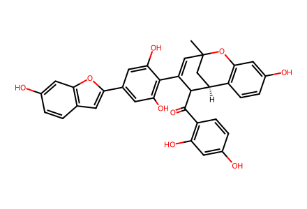
CC12C=C(c3c(O)cc(-c4cc5ccc(O)cc5o4)cc3O)C(C(=O)c3ccc(O)cc3O)[C@@H](C1)c1ccc(O)cc1O2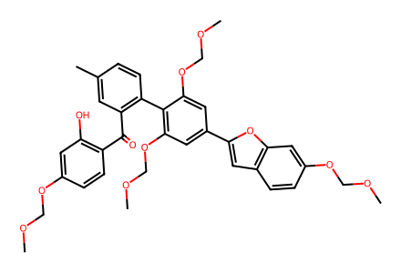
COCOc1ccc(C(=O)c2cc(C)ccc2-c2c(OCOC)cc(-c3cc4ccc(OCOC)cc4o3)cc2OCOC)c(O)c1